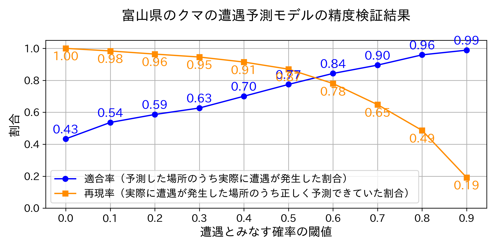
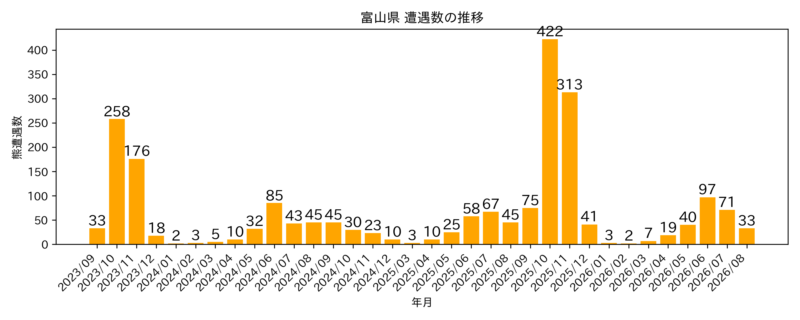

Updated: 2026.09.11 09:00:00
札幌市 | 青森県 | 秋田県 | 盛岡市 | 山形県 | 宮城県 | 福島県 | 新潟県 | 富山県 | 石川県 | 福井県 | 長野県 | 岐阜県 | 山梨県 | 栃木県 | 群馬県 | 埼玉県 | 東京都 | 静岡県 | 三重県 | 滋賀県 | 京都府 | 奈良市・木津川市・山添村 | 鳥取県 | 山口県 |
このマップは、上智大学 深澤研究室で開発したモデルを使用し、富山県内のクマ遭遇確率を予測したものです。
| レベル５ | |
| レベル４ | |
| レベル３ | |
| レベル２ | |
| レベル１ |
どの色のマーカーから警戒すればよいの？
このマップの予測はどのくらい当たるの？

クマの遭遇件数はどれぐらい増えているの？

技術的な内容・参考記事：
謝辞：
本研究では次のデータを使用しました。提供機関様に感謝します。
※このマップおよび掲載内容の無断転載・再配布を禁止します。
ご利用や転載に関するお問い合わせは、fukazawa at sophia.ac.jpまでご連絡ください。